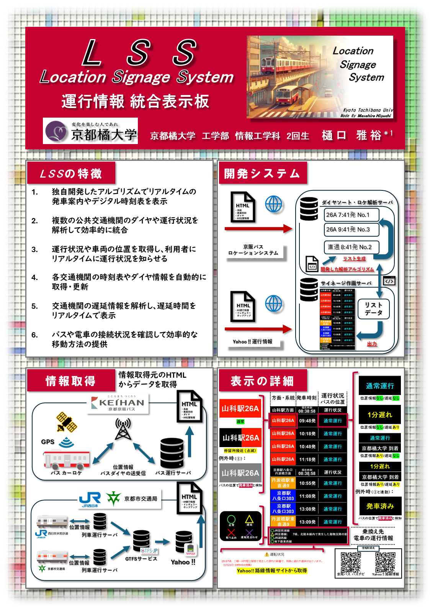

1月25日(土)にオープンソースカンファレンス（OSC）Osaka 2025に出展してきました！
ブースでは、「LSS (Location Sinage System)」と「利便性と環境を配慮したカレンダー」を紹介し、多くの方に興味を持っていただきました。


イベントを通じて、さまざまな分野の技術者や開発者の方々と交流でき、とても刺激的な時間でした！
実際にデモを見てもらったり、質問をいただいたりする中で、新たなアイデアやフィードバックも得られたので、今後の開発にも活かしていきたいと思います。
さらに、ライトニングトークで「1msの教訓」というタイトルで発表しました。この発表では、LSS開発の苦戦した部分や開発で得た教訓に関してプレゼンしました。
↓YouTubeに公開されました（17:40～あたりです）
ご来場いただいた皆さま、ありがとうございました！